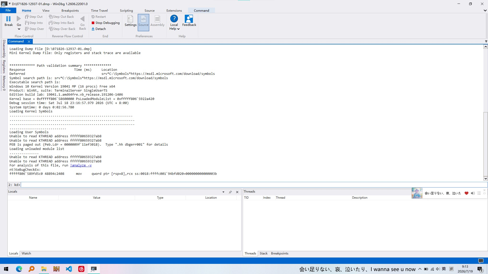
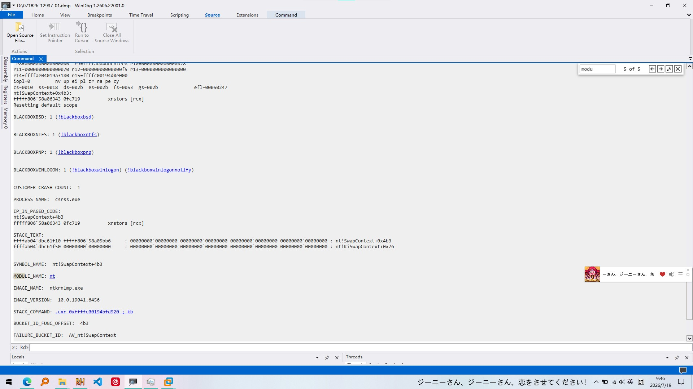
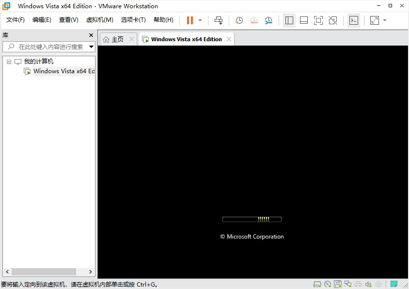

前几天，因为高温我的电脑烧坏了，遂去华为店换了个硬盘，满血复活。
正当我安装软件并测试时，启动VMware遭遇蓝屏：SYSTEM_SERVICE_EXCEPTION
之前掉盘蓝屏给我整出PTSD了，看到这个肯定脑瓜子嗡了一下，不过我很快冷静下来：蓝屏后电脑还能写入错误信息，硬盘应该没事。
重启后，我进入C:\Windows\Minidump查看转储文件，不过我不是很会用windbg欸。。。

但我还是先试试：下载好符号文件，我们看到错误代码是3B，这种未捕获的异常最折腾人了。
我们使用!analyze -v查看完整分析：

有一句话吸引了我的注意：nt!SwapContext+0x4b3执行了xrstors [rcx]，查了一些资料后我发现rcx指向的内存地址无效，更恐怖的是，如果真是VMware的问题，贴出的输出没有提到任何系统文件和驱动！
我草，难道CPU或内存也烧坏了？吓得我赶紧跑了遍memtest64，没有发现内存故障，并且如果我电脑还能开机这么久，估计CPU也没有大问题。
呐，你知道吗，这一定是VMware的问题，现在的电脑没那么容易坏。
让我们相信T氏的话吧！
我先检查BIOS设置，Intel VT-x是开的；Windows程序和功能中Hyper-V也是关闭状态。我之前用的是Win10 2009，装的VMware 16.2.1，现在我用的是Win10 22h2，装的VMware 16.0.0，是不是这小小的版本号差异造成的？
去各大论坛逛了一圈，也有人说过在Win10上低版本VMware蓝屏的，错误代码都一样！比如这个
为了证实我的猜想，我找来一个VMware16.2.2的安装包，升级完成后配置好虚拟机。我摘下耳机（因为听歌的时候突然蓝屏会出现电音）用颤抖的手按下“开启此虚拟机”按钮。
没蓝屏！
虚拟机正常启动，Windows也成功完成安装部署等操作，最后除了显卡驱动有点小问题其它一切正常。

这件事也给我启发：有时候系统日志不一定能准确证明问题所在，不要太快给自己的硬件判死刑。
这里再讲点题外话，之前我就有点困惑，掉盘的时候给出的错误好像是0x124（WHEA_UNCORRECTABLE_ERROR）按理来说应该是0xF4之类的（找硬盘结果硬盘不回话）为什么出的是这种电气信号异常呢？
这个说法貌似比较多，我个人是这么理解的：我用的是NVMe硬盘，插在PCIe插槽上，一旦掉盘就会拉低那里的电压，CPU就觉得总线出岔子了。